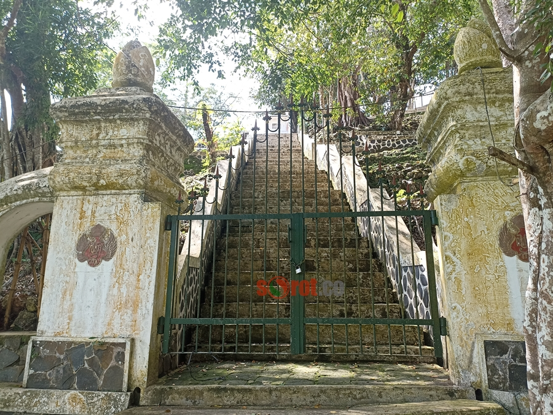

Pertapaan Kembang Lapir

Pertapaan Kembang Lampir adalah sebuah situs bersejarah dan spiritual yang terletak di Dusun Blimbing,
Desa Girisekar, Kecamatan Panggang, Kabupaten Gunungkidul, Daerah Istimewa Yogyakarta. Tempat ini
dikenal sebagai salah satu lokasi pertapaan yang paling sakral di wilayah selatan Yogyakarta. Tidak
hanya menyimpan nilai sejarah, Kembang Lampir juga dipercaya menjadi tempat turunnya wahyu keprabon atau
wahyu kekuasaan, menjadikannya destinasi yang ramai dikunjungi oleh para peziarah, terutama mereka yang
sedang memburu jabatan atau kedudukan penting dalam pemerintahan maupun dunia usaha.
Kembang Lampir erat kaitannya dengan sosok Ki Ageng Pemanahan, tokoh utama yang dikenal sebagai leluhur
dinasti Mataram Islam. Dalam catatan sejarah dan kepercayaan masyarakat, Ki Ageng Pemanahan melakukan
pertapaan di tempat ini untuk mendapatkan petunjuk spiritual tentang masa depan keturunannya dan arah
kekuasaan yang akan terbuka. Dalam pertapaannya, ia mendapat bisikan gaib yang kemudian mempertemukannya
dengan Sunan Kalijaga, dan dari situlah ia mendapatkan restu untuk menghadap Sultan Hadiwijaya dari
Kerajaan Pajang. Pertemuan inilah yang kelak menjadi awal terbentuknya Kesultanan Mataram, cikal bakal
dua kerajaan besar di Jawa: Keraton Yogyakarta dan Keraton Surakarta.
Secara fisik, lokasi pertapaan ini terletak di atas bukit yang dikelilingi hutan rindang dan bebatuan
karst khas Gunungkidul. Untuk mencapainya, pengunjung harus mendaki puluhan anak tangga yang menuju ke
sebuah area sakral berpagar dan dijaga oleh simbol-simbol keraton. Di bagian atas, terdapat bangunan
utama bernama Bangsal Proboyekso yang dibangun oleh Sri Sultan Hamengku Buwono IX. Bangsal ini berfungsi
sebagai tempat penyimpanan pusaka-pusaka keraton serta menjadi titik utama upacara spiritual yang
dilakukan secara rutin oleh abdi dalem Keraton Yogyakarta, terutama pada malam Selasa Wage. Di sisi
kanan dan kiri tangga terdapat dua bangsal paseban sebagai tempat duduk dan berdoa bagi para peziarah.
Nilai spiritual Kembang Lampir sangat tinggi di mata masyarakat Jawa, terutama mereka yang percaya bahwa
wahyu kekuasaan atau “wahyu keprabon” bisa diraih melalui laku prihatin dan tapa brata di tempat ini.
Tak heran jika setiap tahun, terutama menjelang pemilu atau pergantian jabatan strategis, tempat ini
dipadati oleh para peziarah yang datang dari berbagai penjuru. Mereka umumnya tidak hanya dari kalangan
masyarakat biasa, tetapi juga tokoh-tokoh politik, birokrat, bahkan calon kepala daerah yang berharap
mendapat restu atau "energi gaib" demi memperlancar jalan mereka meraih kekuasaan. Ritual-ritual seperti
meditasi, tirakat, dan membawa sesaji menjadi hal umum yang dilakukan, menambah aura mistik yang
menyelimuti lokasi ini.
Namun, kehadiran para “pemburu jabatan” ini juga menimbulkan polemik tersendiri. Sebagian pihak menilai
bahwa praktik semacam ini dapat mengaburkan makna spiritual yang murni, menjadikan tempat suci sebagai
alat pencapaian ambisi pribadi. Meskipun demikian, kepercayaan masyarakat terhadap kekuatan spiritual
Kembang Lampir tetap kuat, didukung pula oleh warisan budaya dan legitimasi yang diberikan oleh Keraton
Yogyakarta.
Secara keseluruhan, Pertapaan Kembang Lampir bukan hanya situs sejarah, tetapi juga cerminan bagaimana
spiritualitas, kekuasaan, dan budaya Jawa saling bertaut erat. Ia menjadi simbol persimpangan antara
laku spiritual yang tulus dan ambisi kekuasaan yang kerap menyertainya. Dengan segala kekayaan sejarah
dan kepercayaan yang melingkupinya, Kembang Lampir tak hanya menjadi tujuan wisata religi, tetapi juga
saksi bisu perjalanan kekuasaan di tanah Jawa yang penuh misteri dan kebijaksanaan leluhur.